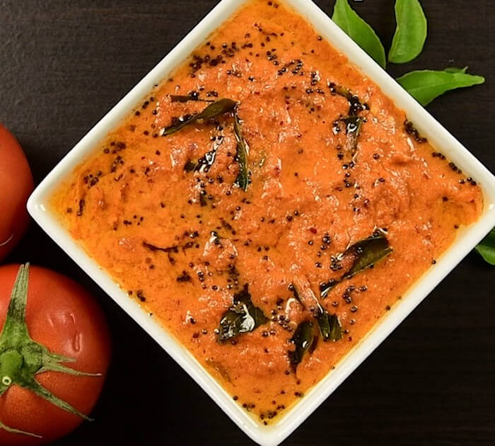

Tomato Chutney

What is Tomato Chutney?
Tomato chutney is a type of chutney, native to the Indian subcontinent, prepared using tomatoes as the primary
ingredient.
Tomato chutney can be used to accompany myriad foods and dishes, such as idly, dosas, uttapam,
pakora, vada, rotis,
kebabs, sandwiches, burgers and meat dishes
The tomatoes can be diced, mashed or pulped, and additional typical ingredients used include ginger,
chilli, sugar, salt, and spices and additionally onion, garlic and peanut or dal for the south Indian version,
which is very tangy.
There
are too many varieties based upon the geographical location.
What are the ingredients required to make it?
- 2 large ripped tomatoes (chopped)
- 2 cloves garlic
- 1 tsp urad dal
- 2 tbsp oil
- 1 tsp chana dal
- ¼ tsp fenugreek seeds
- 3 kashmiri dried red chilli
- ¼ tsp turmeric powder
- ½ tsp sugar
- salt to taste
for tempering:
- 2 tsp oil
- ½ tsp mustard seeds
- ½ tsp urad dal
- pinch of asafoetida
- few curry leaves
How is it made?
- Heat oil in a large kadai.
- When the oil is hot add urad dal, chana dal, methi and red chilli.
- Saute them on medium flame till dal turns golden brown.
- Add garlic and chopped tomatoes and continue to saute.
- Saute till the water evaporates completely and tomato reduces in size.
- Add turmeric powder, sugar and salt.
- Allow the mixture to cool completely and then transfer to a small blender.
- Blend to a smooth paste without adding any water.
Tempering
- Heat oil in a small kadai.
- Add mustard seeds, urad dal, hing and curry leaves.
- Allow the tempering to splutter.
- Pour the tempering over tomato chutney.
Serve with idli, vada and dosa.